PinacConnect
Client-approvedOne system for the whole barangay, from the hall to your phone.

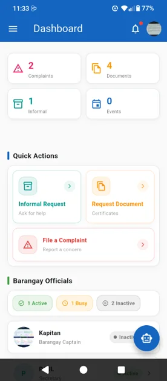
Barangay services, in one place.
PinacConnect brings a barangay's day-to-day work into one system: resident and household records, complaints, blotter cases, document requests, events and announcements.
Everyone works in the same system, on the web portal or the mobile app. Admins manage the records, officials handle the cases dispatched to them, and residents request documents, file complaints and follow each one without lining up at the hall.
What I did
Everything the barangay office handles.
The whole barangay at a glance
Totals for residents, complaints, requests, households and users, with charts for complaints by status and category, residents by gender and by age group.
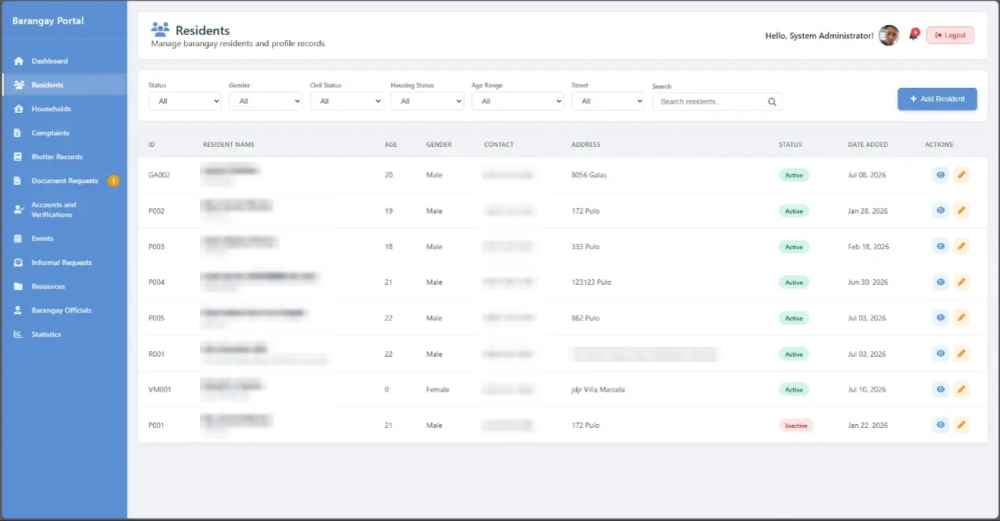
Clean resident and household records
Filter residents by gender, civil status, housing, age range and street. Households link their members to a household head.
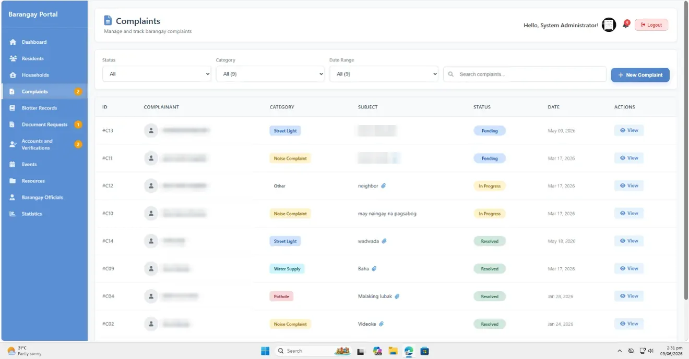
Complaints that don't get lost
Every complaint is categorised (street light, noise, water supply, pothole) and tracked from pending to in progress to resolved.
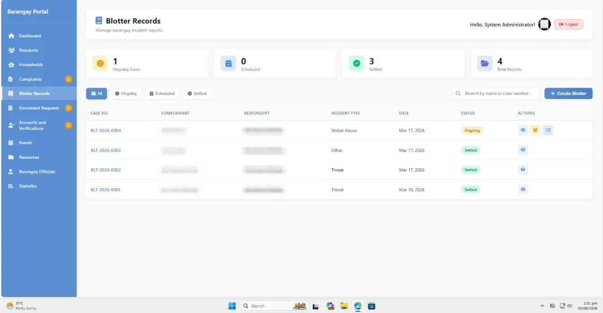
Blotter cases with numbered records
Incidents get a case number, complainant and respondent, incident type and status, with counts for ongoing, scheduled and settled cases.
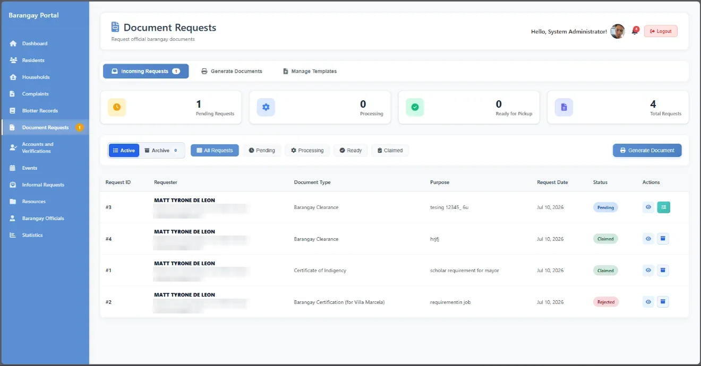
Clearances and certificates, start to pickup
Incoming requests move through pending, processing, ready for pickup and claimed. Staff can generate the document from a managed template.
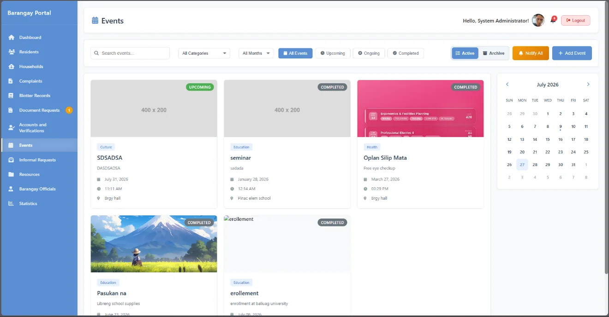
Events with a calendar view
Upcoming, ongoing and completed events by category and month, and a "Notify all" button to push them to residents.
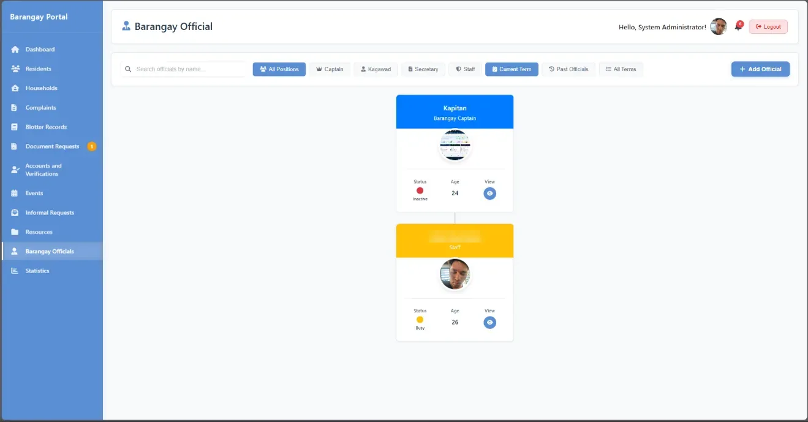
Who's on duty
An org chart of current barangay officials with their availability, filterable by position and term.
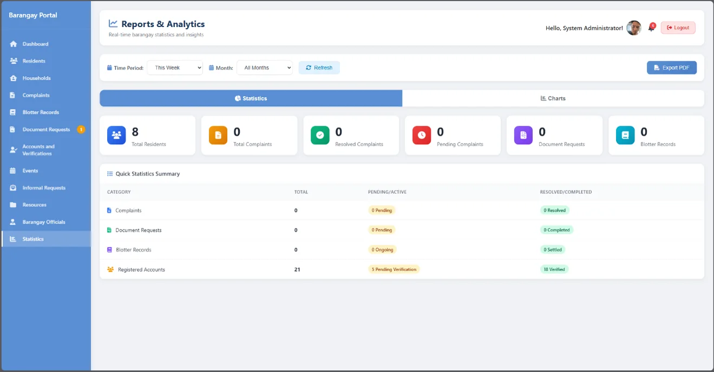
Reports, exportable to PDF
Statistics by time period for residents, complaints, document requests and blotter records, with a chart view and PDF export.
One app, the right tools for every role.
The Flutter app I co-built talks to the same backend as the web portal through a REST API. Admins, officials and residents sign in to the same app, and each one sees what their role needs.
Quick actions up front
The app opens on a dashboard with counts for complaints, documents, informal requests and events, plus shortcuts to the most common tasks.
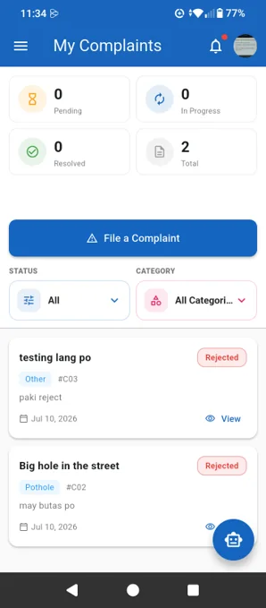
A resident files it
Residents file complaints from their phone and follow each one until it is resolved.
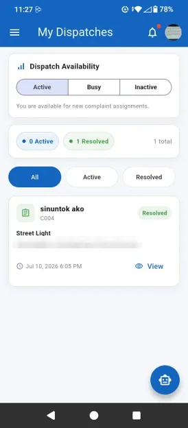
An official gets dispatched
Officials set their availability (active, busy or inactive) and see the cases assigned to them.
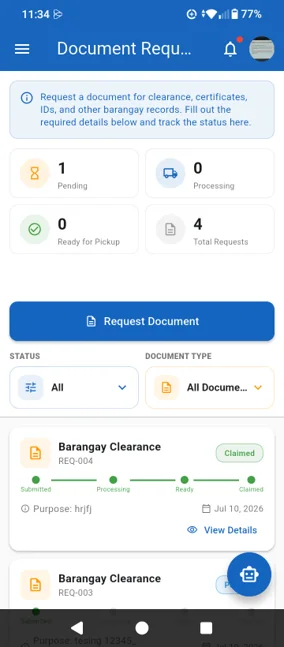
Track a document like a delivery
Each request shows a progress line from submitted to processing, ready and claimed, so nobody has to ask the hall if it's done yet.
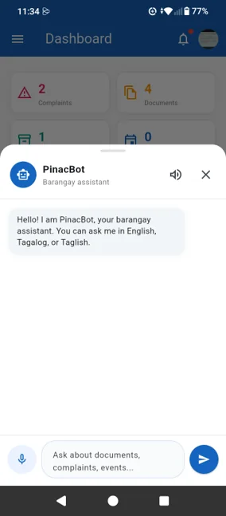
A barangay assistant in the app
PinacBot answers questions about documents, complaints and events in English, Tagalog or Taglish, by text or voice.
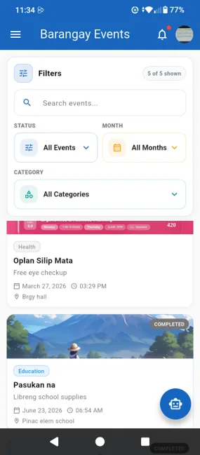
Events and informal requests
Browse barangay events by month and category, and send informal requests (inquiries, schedule requests, concerns) with a tracking number.
The rest of the portal.
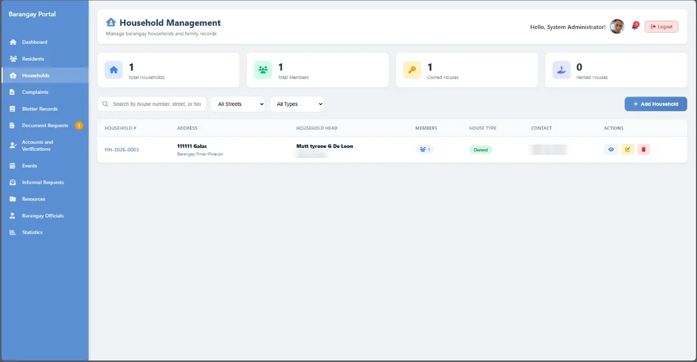
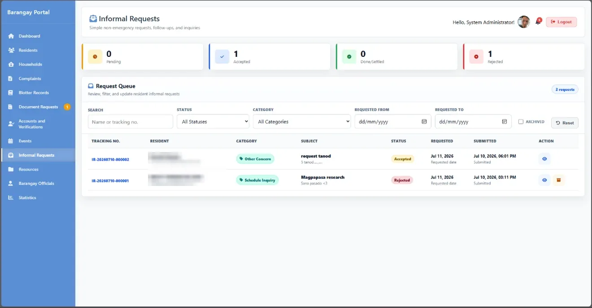
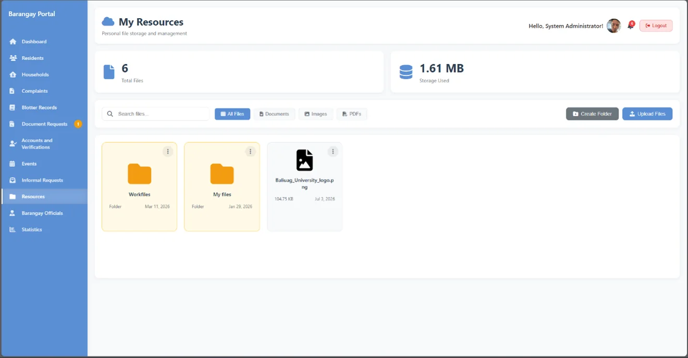